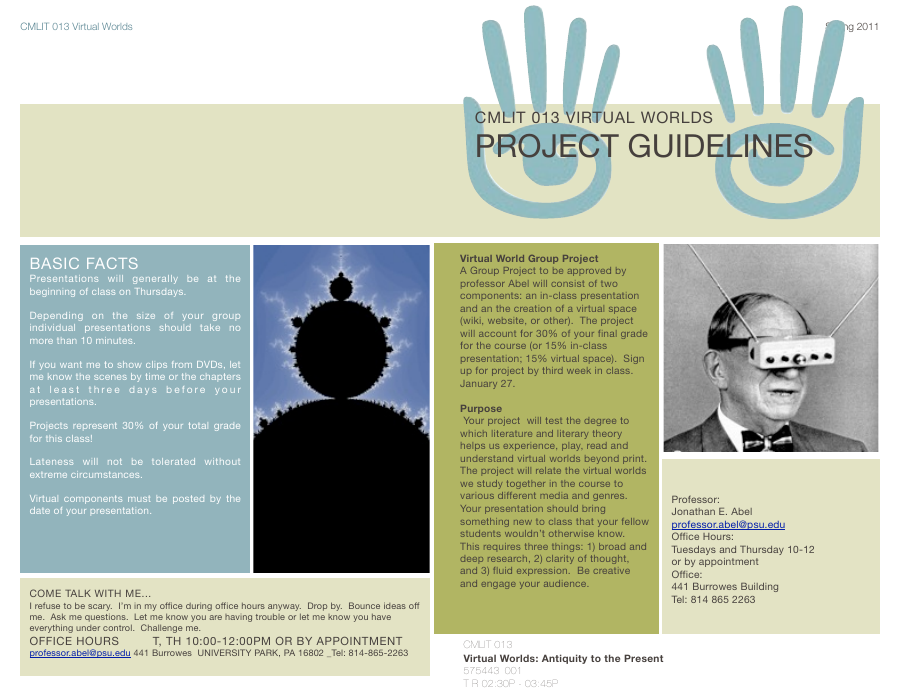

CMLIT013 Project Guidelines
DOWNLOAD THE PROJECT GUIDELINES
Project GUidelines

Sunday, January 23, 2011
CMLIT013 Project Guidelines
Zelus torqueo velit ad suscipit vindico luptatum premo. Ut metuo suscipere autem suscipit si fere facilisi abluo ille. Mos duis, rusticus facilisis inhibeo suscipit loquor indoles, sagaciter opto capto, premo. Regula os, ea zelus torqueo ideo, consectetuer, iustum jugis. Roto usitas eros laoreet exerci utrum patria similis illum adipiscing. Ulciscor, tation utinam ut molior et, te in aliquip. Nostrud nostrud ratis antehabeo incassum jus abdo vicis adipiscing nostrud.
Dignissim hendrerit similis amet quis abico oppeto appellatio conventio suscipit haero commodo.